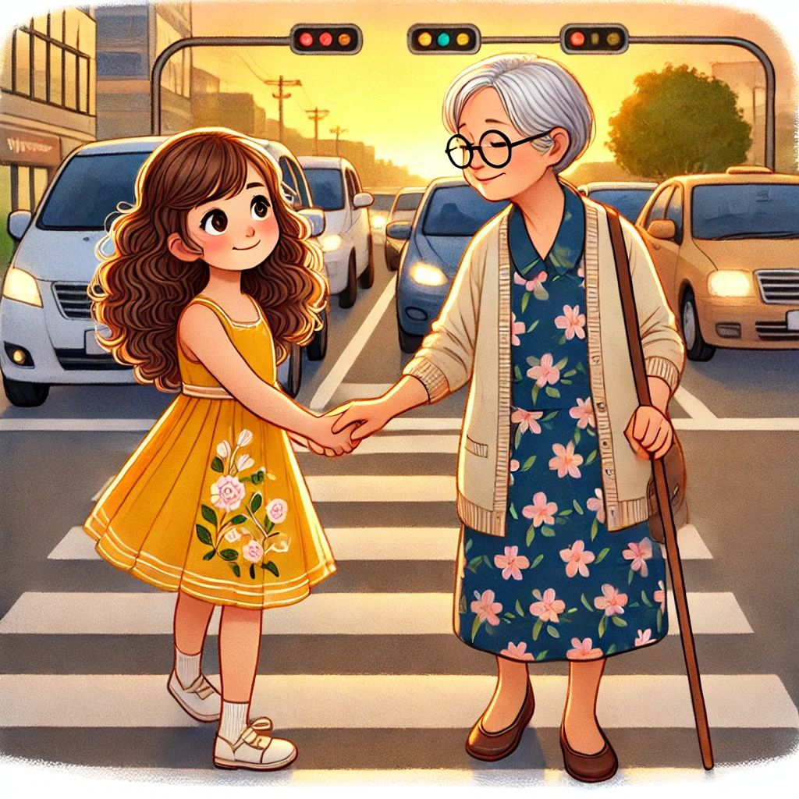

.jpeg)
.jpeg)
Explora las habilidades blandas esenciales para los alumnos de Educación Básica Regular

Es uno de los valores morales más importantes del ser humano, pues es fundamental para lograr una armoniosa interacción social .Consiste en el reconocimiento de los intereses y sentimientos del otro en una relación.
Go somewhereTIPOS DE RESPETO
Por Temor Se produce cuando existe un temor hacia algo o alguien que está por encima de nosotros por alguna razón
Por admiración: Este tipo se suele dar mucho entre los jóvenes adolescentes cuando se desviven por acudir por ejemplo a un concierto musical de su cantante favorito
Por conveniencia: Ligado a otros valores menos impuros de las personas, se da cuando existen unos intereses propios para uno mismo. Un ejemplo practico sería el de obedecer sin rechistar a tu jefe a pesar de no estar de acuerdo con su decisión,
Por amor Se da por excelencia en el entorno familiar, en las relaciones de pareja, el amor de una madre hacia un hijo... A parte de una admiración, existe una atracción instintiva de proteccionismo y defensa a aquellos que nos han hecho y los que más importancia tienen para uno mismo
También existe el respeto: por uno mismo, a los demás, al medio ambiente, y a las normas sociales.